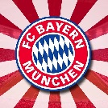

FC Bayern Monachium
(nie)Oficjalna strona
Urodziny
wielkiej osoby

6 Sierpnia, czyli własnie dziś, swoje 72 urodziny obchodzi wielki człowiek - wierny kibic Bayernu Monachium, a także wspaniały dziadek. Oczywiście mowa tu o Wernerze Tkocz! Jeśli właśnie czytasz te słowa, zapraszam Cię również do przeczytania życzeń, jakie chciałbym Ci dziś złożyć.
Newsy
Bayern na transferowych zakupach + newsy na stronie
Po zakończeniu zeszłego sezonu, apetyt na Puchar Niemiec i przede wszystkim Ligę Mistzrów znacznie wzrósł. Władze Bayernu doszły do wniosku, że niezbędne będzie dokonanie kilku transferów i odmłodzenie drużyny. Dotychczas do klubu z Bawarii przeszło czterech zawodników.Czytaj dalej
Co dalej z Douglasem Costom? + Zakończenie kariery
Przyszłość Costy jest bardzo niepewna. Brazylijczyk po świetnym starcie, złapał dolegliwe kontuzje i wypadł z formy. W zaszłym sezonie grał mało i nie jest zadowolony z takiego stanu rzeczy. WIele mówiło się o jego transferze do włoskiego Juventusu.Czytaj dalej

Okres przygotowawczy czas zacząć! + Odliczanie
Od 1 lipca Bayern rozpoczął przygotowawczy okres do nowego sezonu. Ma on służyć zawodnikom do powrotu
do formy, a także pozyskanym talentom do pokazania swoich umiejętności. Podczas tego czasu
zostanę rozegrane tewarzyskie mecze.
Czytaj dalej
Już w piątek, 18 sierpnia, Bayern zagra inauguracujny mecz Bundesligi z Bayerem Leverkusen. Spotkanie zostanie rozegrane na Alianz Arenie o godzinie 20:30. To bardzo ważny mecz dla zespołu - zarówno trenera jak i zawodników. Liczymy na zwycięstowo Monachijczyków, które doda im wiatru w żagle i poprowadzi do kolejnego mistrzostwa. Aby pomóc selekcjonerowi w wyborze składu prosimy o to, byś wypełnił ankietę.
© 2017, (nie)Oficjalna strona Bayernu Monachium
Wszystkie znaki firmowe pojawiające się na tej stronie należą do ich właścicieli.